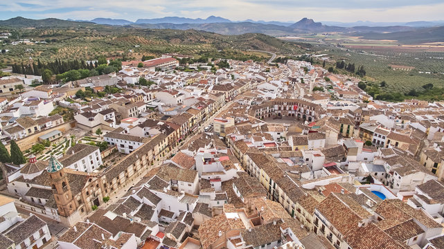

Durante la época musulmana, Archidona alcanzó gran relevancia y fue uno de los principales bastiones defensivos en la región, destacando su emblemático castillo y fortaleza que aún domina el paisaje. En 1462, fue conquistada por los Reyes Católicos, pasando a formar parte del Reino de Castilla.
Hoy en día, Archidona es conocida por su casco histórico de estilo barroco, su famosa Plaza Ochavada, y su vibrante tradición cultural, reflejada en sus festividades, gastronomía y artesanía local. Es un destino que combina historia, cultura y naturaleza, ofreciendo una experiencia auténtica de la Andalucía rural.
Con calles empedradas y casas de estilo andaluz, Archidona conserva un ambiente auténtico y pintoresco que invita a recorrer sus rincones. Uno de sus lugares más emblemáticos es la Plaza Ochavada, una joya del barroco andaluz que se ha convertido en un símbolo de la localidad.
Además de su patrimonio histórico, Archidona ofrece una deliciosa gastronomía, con productos típicos como el aceite de oliva, embutidos y dulces artesanales. Rodeada de montañas y naturaleza, es un destino ideal para quienes buscan tranquilidad, cultura y paisajes únicos en el corazón de Andalucía.
En esta época, Archidona conservaba su encanto tradicional, reflejado en su arquitectura y estilo de vida. Las fotografías de este periodo nos permiten apreciar la evolución de la localidad y su cultura, así como los cambios que han marcado su historia a lo largo del tiempo.